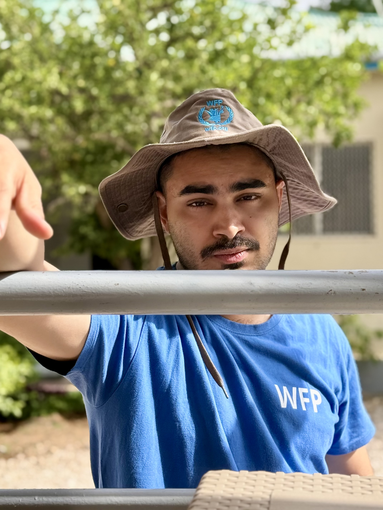

Kush Thaker
Humanitarian
Policy Analyst
UN World Food Programme
Working at the intersection of technology and humanitarian action — focused on biometric information exchange and interagency interoperability to strengthen aid delivery for the world's most vulnerable people.
Get in touch